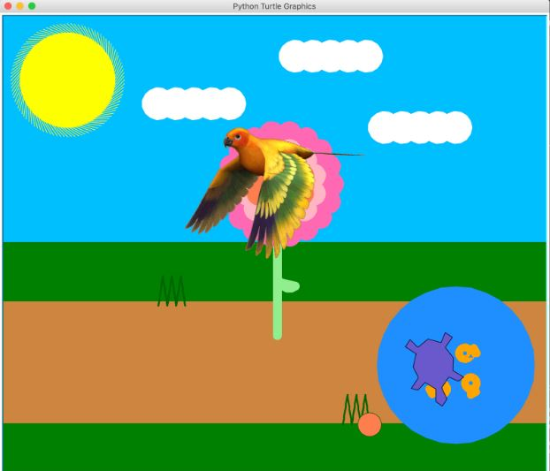
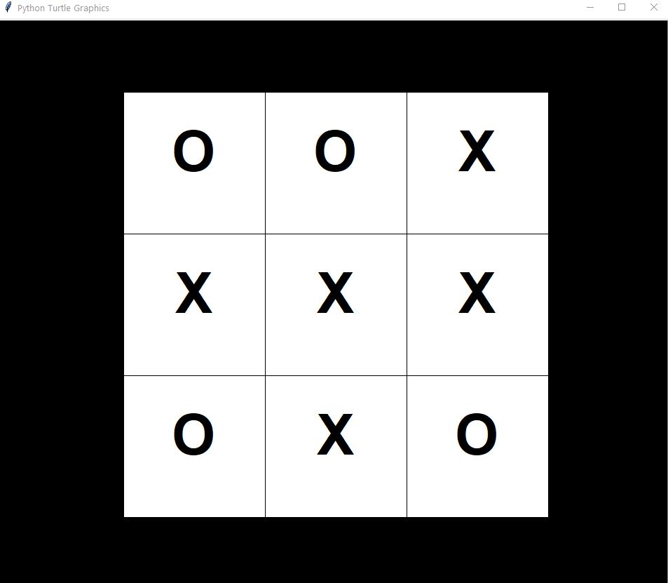

1.1.9 Project: Pablo the Turtle's Adventure

This is our project. A turtle runs and hits a flower, spinning and changing colors. He then dives into the lake to swim around with his fish friends, and various objects are moving as well.
1.2.5 Project: Tic Tac Blackout

This is our game! At the beginning of the game, it flashes white to briefly display the board.The screen then "blacks out", and it begins the multiplayer Tic Tac Toe in the dark. You take turns with your friend next to you in playing, and whoever can sucessfly get a Tic Tac Toe on the blacked out gameboard is the winner. Once a tile is clicked, it turns white revealing the location you chose to place either your X or O marker. We were planning to advance the game by making a round system and a scoreboard, but the code function did not properly work during our presentation, so it is a one round game :)